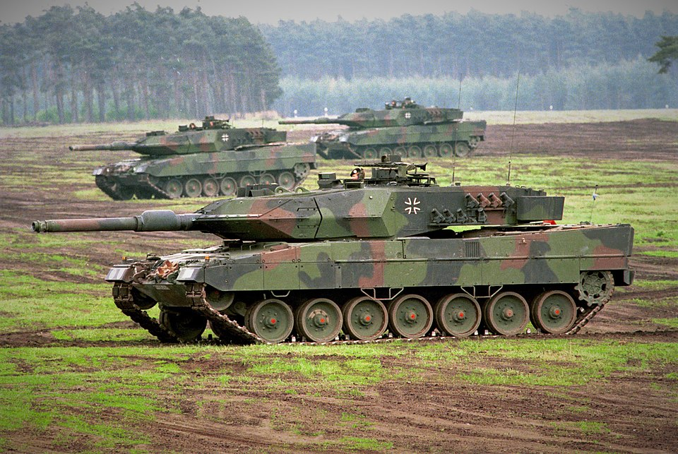
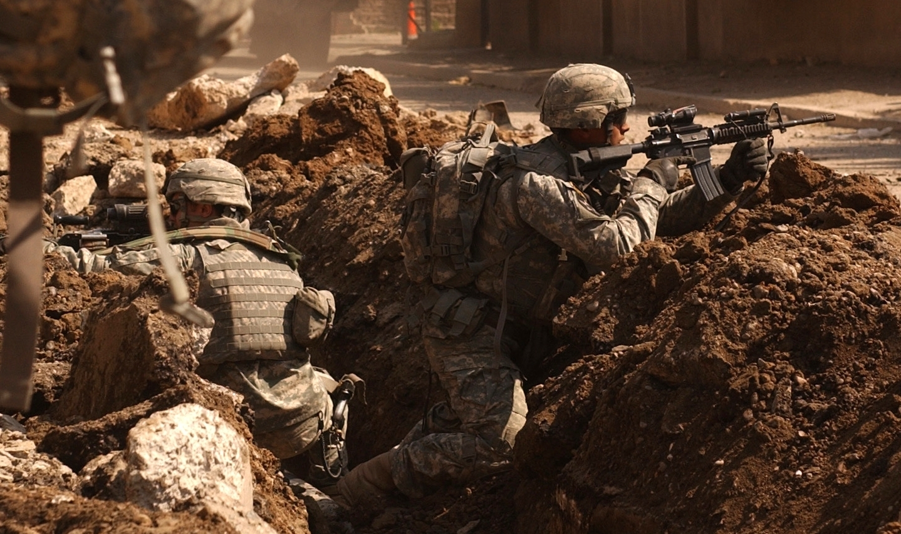
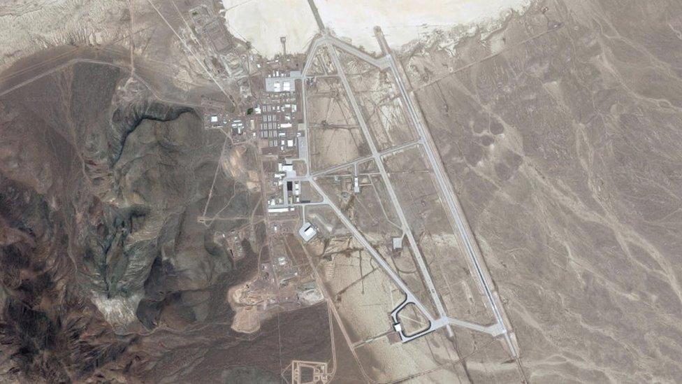

Historia i technologia wojskowa
Odkryj ewolucję technologii wojskowej, strategii i znaczących konfliktów na przestrzeni dziejów.
Epoki wojskowości
Starożytna sztuka wojenna
Starożytna sztuka wojenna obejmuje praktyki wojskowe od początku zapisanej historii do końca okresu starożytnego, około 476 n.e.
Kluczowe osiągnięcia to:
- Formowanie zorganizowanych armii
- Rozwój broni z brązu i żelaza
- Techniki oblężnicze
- Strategie wojny morskiej
Średniowieczna sztuka wojenna
Średniowieczna sztuka wojenna obejmuje okres od upadku Rzymu do początku epoki nowożytnej, mniej więcej od V do XVI wieku.
Charakteryzuje się:
- Ciężką kawalerią i rycerstwem
- Fortyfikacjami zamkowymi
- Łukami długimi i kuszami
- Wczesną bronią prochową
Nowoczesna sztuka wojenna
Nowoczesna sztuka wojenna obejmuje koncepcje, metody i technologie, które weszły do użytku podczas i po dwóch wojnach światowych.
Kluczowe elementy to:
- Wojna zmechanizowana
- Siła powietrzna
- Broń jądrowa
- Wojna elektroniczna
- Wojna cybernetyczna
Porównanie nowoczesnego sprzętu wojskowego
| Sprzęt | Typ | Kraj pochodzenia | Rok wprowadzenia | Nadal w służbie |
|---|---|---|---|---|
| M1 Abrams | Czołg podstawowy | Stany Zjednoczone | 1980 | Tak |
| AK-47 | Karabin szturmowy | Związek Radziecki | 1949 | Tak |
| Klasa Nimitz | Lotniskowiec | Stany Zjednoczone | 1975 | Tak |
| S-400 Triumf | System obrony powietrznej | Rosja | 2007 | Tak |
| B-2 Spirit | Bombowiec strategiczny | Stany Zjednoczone | 1997 | Tak |
Galeria militariów




.jpg)
